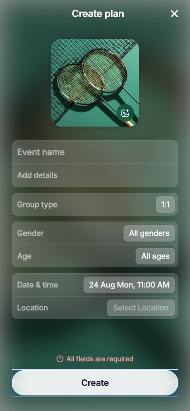
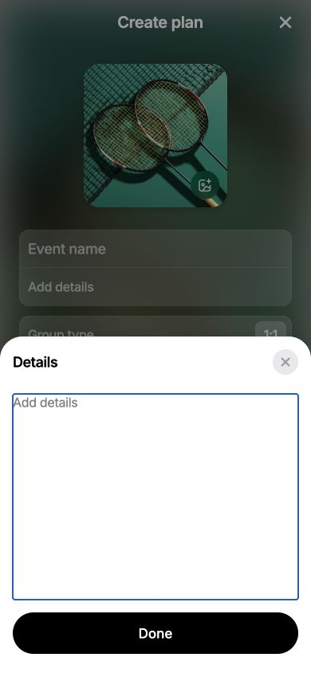
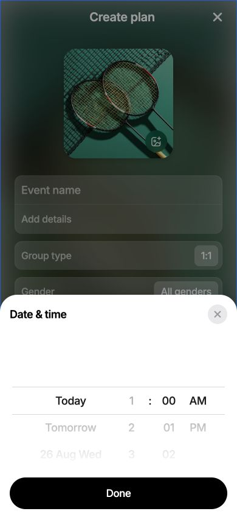

One Create action
The signed-out CTA now says “Create” and validates the form before opening sign-in.
Issue #124 · Implementation report
Signed-in and signed-out users now see the same Create action and the same validation. The extra success screen, unused fallback copy, and unnecessary sheet actions were removed.
The signed-out CTA now says “Create” and validates the form before opening sign-in.
Users see “All fields are required” or “Please choose a future time”.
New plans now return directly to My Events, where the existing badge and confetti appear.
The Event Created route, transition measurements, artificial delay, and fallback title/location copy were removed.
The Clear action was removed. Done is now the only action in the sheet.
The future-time copy no longer has a full stop, and the redundant 30-day error was removed.



| Check | Result |
|---|---|
| Focused Create plan, mapper, and navigation tests | 44 passed |
| TypeScript typecheck | Passed |
| Touched-file formatting | Passed |
| Lint | No errors |
| Full frontend suite | 1,216 passed; 24 unrelated existing rendering assertions failed |
The remaining full-suite failures are isolated to Event Details loading-state tests and one Chat Thread assertion. They do not touch the Create plan implementation.